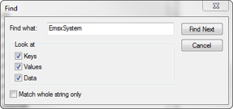

FAQ¶
General FAQ¶
- Why can I not subscribe using ticker and fields like other APIs?
The EMSX service only allows users to subscribe to their own Orders and Routes (placements). Most applications will use only two subscriptions, one for Orders and one for Routes (placements). A list of EMSX fields is required when creating the subscriptions.
- Why can’t I see my orders and or routes in EMSX?
The most common cause is that the user is connected to the BETA machines on the API side, whilst using the PROD machine on the terminal. Switching one of these will normally resolve the problem.
- How do I connect to the BETA machine of the terminal?
Use the function DGRT Y087<GO> on the terminal, followed by EMSX<GO>. This will connect that terminal window to the EMSX BETA machine. Please note that this only applies to that particular terminal window only. To return to PROD system on the terminal, type DGRT OFF<GO>
- How do I connect to PROD or BETA in the API?
Two separate services are provided. These are //blp/emapisvc (PROD) and //blp/emapisvc_beta (TEST)
- How do I match my requests to responses?
This is done in the same was as for other Bloomberg API services, with the use of CorrelationID.
- What broker or simulator do I use?
When first enabled for BETA access, client will generally be enabled for BMTB or other internal Bloomberg simulator codes. A new development broker has recently been added called the API. To be enabled for other brokers in the LIVE environment, clients should contact the EMSX Help Desk.
- How do I test my application with these simulators?
Test brokers (BB, BMTB, EFIX and API) are automated systems that respond a request in a predetermined way, based on the specified security in the request. Each test broker has a set of documented behaviors that clients can take advantage of to create test cases. These documents are currently provided on request.
- Why am I not seeing events that affect my Routes?
This is normally caused by only having a subscription for Orders. A separate subscription is needed for route messages when using our programmable interface.
- Why am I still seeing orders that I deleted or have completed?
Orders that were manually deleted, or completed in a previous session, will continue to transmit on the order. Check the EMSX_STATUS of the returned message to confirm if this is a live order. These orders will cease to report between 24 and 48 hours after they are deleted depending on the nature of the order.
- Why is the value of a field returned as blank / zero?
This normally means that the user has not subscribed to that field in the original subscription. This can also mean that the user did not subscribe to the filed in the first place or is requesting for a static field.
- Why is a field not being returned?
Some fields are specific to either Orders or Routes. You cannot subscribe to an Order field in the Route subscription and vice versa.
The type of message will also dictate which fields will be returned. For NEW_ORDER_ROUTE and INIT_PAINT messages, all fields will be returned. However, for UPD_ORDER_ROUTE, the user will only receive a small number of static fields along with all those fields deemed to be ‘dynamic’, meaning they can change during the lifetime of the order or route.
This is one of the reasons as why the user is encouraged to maintain their own image of and order or route within their application.
- How do I receive Fill messages?
Currently, Fill level messaging is not supported. A fill event will generate a UPD_ORDER_ROUTE message, with the applicable changes to the order and route data and these are not guaranteed update for the fills. The only way to track individual fills is to use the //blp/emsx.history service using request/response service calls.
- How do I route a complete basket?
The term basket here is defined as a way to send the entire group of order into a single basket to a broker destination or to a broker algorithm, which supports basket. The term basket here is not intended for those who want to tie a particular group of orders into a trading strategy.
Currently routing a basket is a two-step process in EMSX API. First, the user will need to use CreateOrder request to create the order and include the EMSX_BASKET_NAME in the field. To route the order, the user can use either GroupRouteEx or GroupRouteWithStrat and include the EMSX_SEQUENCE number inside the array.
If the user misses an EMSX_SEQUENCE number inside the specified basket, the particular missing order will not be sent as part of the basket.
- How long do DAY orders and complete orders stay on the blotter and in the API? (Status = 8)
In the old logic, the DAY orders stayed 4 hours after the exchange closed. The new logic is to extend this to 8 hours after the exchange closed. Expired orders are deleted after 2 days. For expired orders, when user gets INIT_PAINT, the will get updates for those expired orders with status=8.
For partially filled orders delete will modify amount down to the filled amount and that order will not disappear and will be treated as a filled order. The Excel Add-In currently removes anything in the blotter with Status=8.
- Why do I get “Internal error. Please contact customer support”?
Unfortunately, this is a generic error message, which can be caused by a number of reasons. However, the most common is that the user has failed to provide a mandatory field with a request.
- Why do I get “Customer ABCDE is not validated for ETORSA”?
Client must sign a Bloomberg Electronic Trading & Order Routing Service Agreement before they can be enabled for EMSX API access.
- Why do I get “User ABCDE is not permitted for the API”?
EMSX Help Desk must enable users for EMSX API access via EMSS.
- Why do I get “User NOT Enabled to route to this broker by EOR (ENAB).”?
Users must be enabled for specific brokers. This is done by EMSX Help Desk support for internal simulator codes and by the broker for their own production codes.
- I am enabled but I get a red bar on the bottom when I click on the EMSX button.
This is usually due to the following issues.
- BBCOMM failed to establish a session. For this please see the next section on restarting BBCOMM
- The ETORSA/FIET paperwork is not in file. Every EMSX API user’s firm will need to sign ETORSA and or FIET before using the EMSX API. Please click Help Help in EMSX<GO> and have the Trade Desk personnel check for this legal check.
- The desktop prevents any third party WPF components from running. This is usually tied into the PC’s image. This will usually cause an exception in the System.Windows.Media.Composition library. This will usually require reinstall of .NET 3.5 SP1, hardware display drivers, and DirectX libraries.
How do I restart bbcomm?
- Close all instances of Excel, Word and PowerPoint.
- Open task manager and kill bxlaui.exe and bxlartd.exe.
- Open a command prompt and type bbstop
- In the same command prompt, type the command bbcomm. BBCOMM should report that it is running successfully and should not return.
How do I regenerate apiregistry.ini file?
Open regedit from RUN window and Clear the “APIRegistryCRC32” registry value located at “HKEY_LOCAL_MACHINESOFTWAREBloomberg L.P.Office ToolsSettings” or “HKEY_LOCAL_MACHINESOFTWAREWow6432NodeBloomberg L.P.Office ToolsSettings” on Windows 7.
How do I modify GTD to day order?
Set EMSX_GTD_DATE to “-1” or -1 or any negative GTD date will reset the order to day order.
- How do I modify or reset the stop price of an order?
Set EMSX_STOP_PRICE to “-1” or -1
- How do I reset my order from Limit to Market?
EMSX_LIMIT_PRICE=-99999 is only required when modifying from LMT to something else
- How is EMSX_RELEASE_TIME used?
EMSX_RELEASE_TIME is in HH:MM format. For the API it is defaulted to the exchange time. This only works on requests that are routable from EMSX API. Thus, it will not work on CreateOrder request. Since the field is an integer, it should be forammted as 1101 for 11:01,
- Are EMSX_TICKER and EMSX_SIDE elements always available on the subscription service?
No, any fields that are static are not always returned.
- Can update events come before the initial_paint or new event?
Yes, this wasn’t the original intention, however, due to current EMSX back-end, the update (Event Status = 7) messages can come before initial_paint (Event Status=4) or New (Event Status = 6)
- Are INITIAL_PAINT messages always first?
No, you can receive any route messages before the order message with INITIAL_PAINT.
Excel Add-In FAQ¶
- I don’t see the EMSX button on my Excel Add-In
This is mostly due to the user not being enabled for EMSX API. Click Help Help on EMSX<GO> and ask the EMSX Help Desk personnel to see if your UUID is enabled for EMSX API Excel Add-In. If the user has multiple Excel Add-Ins, the EMSX button will be under the Trading Icon.
- I am a Bloomberg AIM user and I am not able to connect from the Excel Add-In.
This is mostly often due to the AIM user not being able to connect to the beta environment (Y087). For AIM, users they will need to test in production since there are no AIM instance in the beta environment (Y087).

One of the ways to solve this is by going into the registry edit by clicking Start and type “regedit”.
Once in the regedit.exe, click Alt-F and type “EmsxSystem”.

Double Click EmsxSystem

Type the word Production in the Value Data column and Click OK.